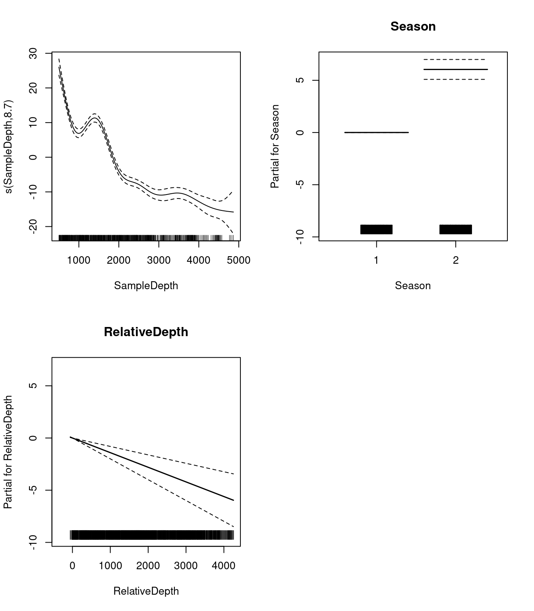
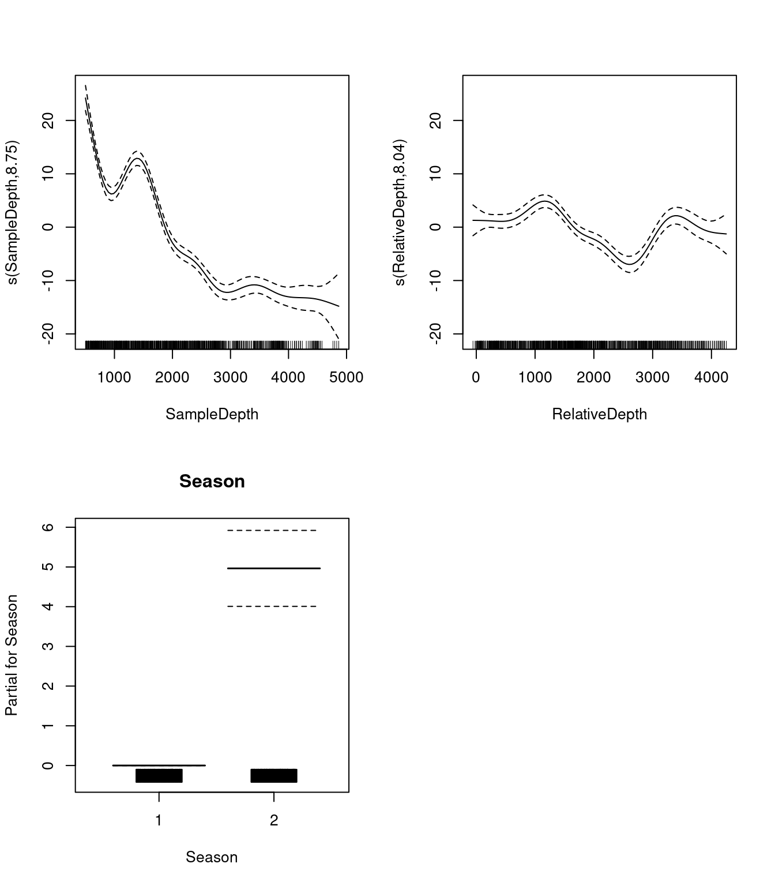
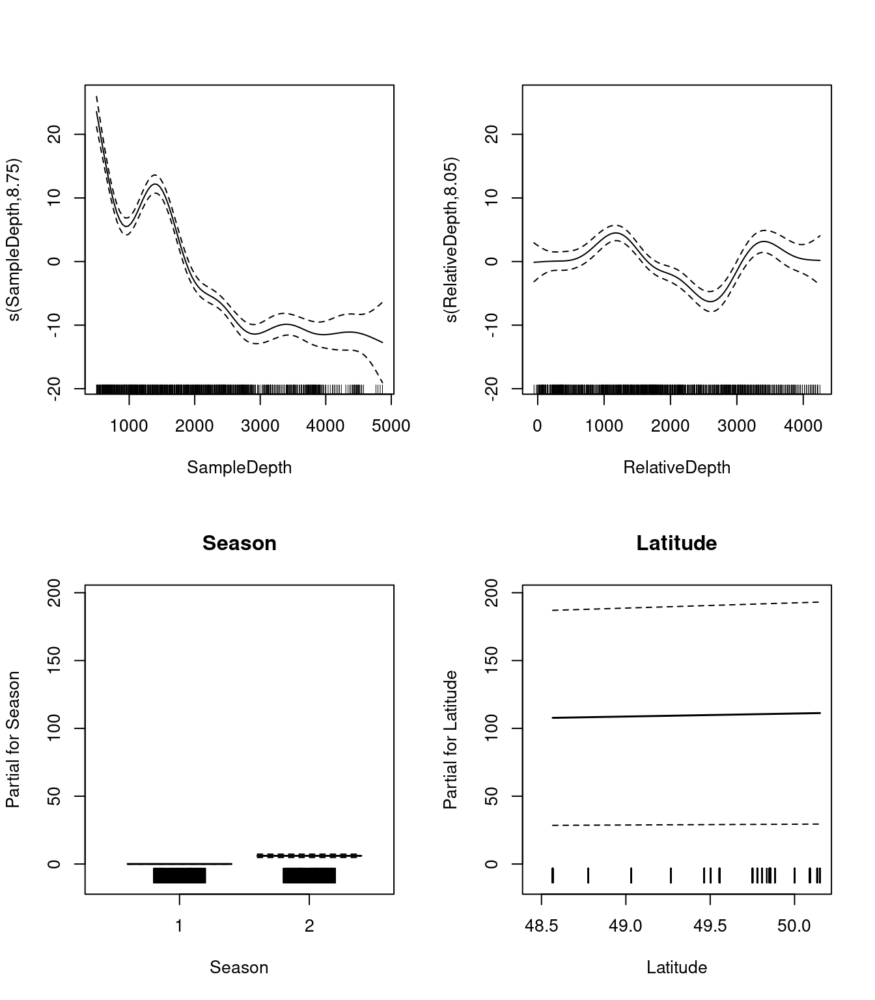

Chapitre 6 GAM avec plusieurs termes non linéaires
6.1 GAM à variables linéaires et non linéaires
Avec les GAMs, il est facile d’ajouter des termes non-linéaires et linéaires dans un seul modèle, plusieurs termes non-linéaires ou même des interactions non-linéaires.
Dans cette section, nous allons utiliser les données de ISIT de nouveau. Nous allons essayer de modéliser la réponse Sources avec les prédicteurs Season and SampleDepth simultanément.
Rappelez-vous de ce jeu de données présenté dans les sections précédentes? Le jeu de données ISIT est composé des niveaux de bioluminescence (Sources) en fonction de la profondeur, des saisons et des différentes stations.
Tout d’abord, nous devons convertir notre prédicteur qualitatif (Season) en facteur.
## SampleDepth Sources Station Time Latitude Longitude Xkm Ykm Month Year
## 1 517 28.73 1 3 50.1508 -14.4792 -34.106 16.779 4 2001
## 2 582 27.90 1 3 50.1508 -14.4792 -34.106 16.779 4 2001
## 3 547 23.44 1 3 50.1508 -14.4792 -34.106 16.779 4 2001
## 4 614 18.33 1 3 50.1508 -14.4792 -34.106 16.779 4 2001
## 5 1068 12.38 1 3 50.1508 -14.4792 -34.106 16.779 4 2001
## 6 1005 11.23 1 3 50.1508 -14.4792 -34.106 16.779 4 2001
## BottomDepth Season Discovery RelativeDepth
## 1 3939 1 252 3422
## 2 3939 1 252 3357
## 3 3939 1 252 3392
## 4 3939 1 252 3325
## 5 3939 1 252 2871
## 6 3939 1 252 2934Commençons par un modèle de base comprenant un terme non-linéaire (SampleDepth) et un facteur qualitatif (Season avec 2 niveaux).
basic_model <- gam(Sources ~ Season + s(SampleDepth), data = isit,
method = "REML")
basic_summary <- summary(basic_model)La sortie de p.table donne des informations sur les termes linéaires:
## Estimate Std. Error t value Pr(>|t|)
## (Intercept) 7.253273 0.3612666 20.07734 1.430234e-72
## Season2 6.156130 0.4825491 12.75752 5.525673e-34Le tableau s.table nous donne donne des informations sur le terme non-linéaire:
## edf Ref.df F p-value
## s(SampleDepth) 8.706426 8.975172 184.3583 0Les edf indiqués dans le s.table sont les degrés effectifs de liberté (EDF) du terme lisse s(SampleDepth). Plus le nombre de degrés de liberté est élevé, plus la courbe est complexe et ondulée.
Lorsqu’un terme a une valeur EDF proche de 1, il est sur le point d’être un terme linéaire. Des valeurs plus élevées indiquent que la courbe est plus ondulée, ou en d’autres termes, fortement non-linéaire.
Dans notre modèle de base, les EDF de la fonction lisse s(SampleDepth) sont ~9, ce qui suggère une courbe fortement non-linéaire.
Traçons les termes lissés (s(SampleDepth)) et linéaires (Season) de notre modèle ajusté:
Que nous montrent ces graphiques sur la relation entre la bioluminescence, la profondeur de l’échantillon et les saisons?
La bioluminescence varie de manière non-linéaire sur le gradient SampleDepth, avec des niveaux de bioluminescence les plus élevés à la surface, suivis d’un second maximum plus petit, juste au-dessus d’une profondeur de 1500, avec des niveaux décroissants à des profondeurs plus basses.
Il y a également une différence prononcée dans la bioluminescence entre les saisons, avec des niveaux élevés pendant la saison 2, par rapport à la saison 1.
6.2 Degrés de liberté effectifs (edf)
Revenons sur le concept de degrés de liberté effectifs (EDF).
Les degrés de liberté effectifs nous donnent beaucoup d’informations sur la relation entre les prédicteurs du modèle et les variables de réponse. Vous reconnaissez peut-être le terme “degrés de liberté” suite à des ateliers précédents sur les modèles linéaires, mais attention ! Les degrés de liberté effectifs d’un GAM sont estimés différemment des degrés de liberté d’une régression linéaire, et sont interprétés différemment.
Dans la régression linéaire, les degrés de liberté du modèle sont équivalents au nombre de paramètres libres non redondants, \(p\), dans le modèle (et les degrés de liberté résiduels sont égaux à \(n-p\)).
Parce que le nombre de paramètres libres des splines de lissage (tel que les GAMs) est souvent difficile à définir, les EDF sont liés à \(\lambda\), où l’effet de la pénalité est de réduire les degrés de liberté.
La limite supérieure d’EDF est déterminée par les dimensions de base \(k\) de la fonction lisse (les EDF ne peut pas dépasser \(k-1\))
En pratique, le choix exact de \(k\) est arbitraire, mais il devrait être suffisamment grand pour permettre une fonction lisse suffisamment complexe. Nous discuterons du choix de \(k\) dans les sections qui suivent.
Des EDF plus élevés impliquent une courbe plus complexe et plus ondulée.
Lorsqu’un terme a une valeur EDF proche de 1, il est sur le point d’être un terme linéaire. Des valeurs plus élevées indiquent que le terme est plus ondulé, ou en d’autres termes, plus non-linéaire!
6.3 GAM à plusieurs variables linéaires et lisses
Nous pouvons ajouter un second terme, RelativeDepth, mais spécifier une relation linéaire avec Sources.
two_term_model <- gam(Sources ~ Season + s(SampleDepth) + RelativeDepth,
data = isit, method = "REML")
two_term_summary <- summary(two_term_model)L’estimation du coefficient de régression pour ce nouveau terme linéaire, RelativeDepth, sera présenté dans le tableau p.table. Rappelez-vous, le tableau p.table montre des informations sur les effets paramétriques (termes linéaires) :
## Estimate Std. Error t value Pr(>|t|)
## (Intercept) 9.808305503 0.6478741951 15.139213 1.446613e-45
## Season2 6.041930627 0.4767977508 12.671894 1.380010e-33
## RelativeDepth -0.001401908 0.0002968443 -4.722705 2.761048e-06Dans s.table, nous trouverons encore une fois le terme non-linéaire, s(SampleDepth), et son paramètre de courbure (edf). Rappelez-vous, le tableau s.table montre des informations sur les effets additifs (termes non-linéaires):
## edf Ref.df F p-value
## s(SampleDepth) 8.699146 8.97396 132.4801 0Regardons les relations entre les prédicteurs linéaires et non-linéaires et notre variable réponse.

6.4 GAM à plusieurs variables non linéaires
Si nous voulons vérifier que la relation entre Sources et RelativeDepth est non-linéaire, on peut modéliser RelativeDepth avec une fonction non-linéaire. Dans ce modèle, nous aurions deux termes lisses:
two_smooth_model <- gam(Sources ~ Season + s(SampleDepth) + s(RelativeDepth),
data = isit, method = "REML")
two_smooth_summary <- summary(two_smooth_model)L’estimation du coefficient de régression pour le seul terme linéaire, Season, sera présenté dans le tableau p.table. Rappelez-vous, le tableau p.table montre des informations sur les effets paramétriques (termes linéaires) :
## Estimate Std. Error t value Pr(>|t|)
## (Intercept) 7.937755 0.3452945 22.98836 1.888513e-89
## Season2 4.963951 0.4782280 10.37988 1.029016e-23Dans s.table, nous trouverons maintenant deux termes non-linéaires, s(SampleDepth) et s(RelativeDepth), et leurs paramètres de courbure (edf). Rappelez-vous, le tableau s.table montre des informations sur les effets additifs (termes non-linéaires):
## edf Ref.df F p-value
## s(SampleDepth) 8.752103 8.973459 150.37263 0
## s(RelativeDepth) 8.044197 8.749580 19.97476 0Regardons les relations entre les prédicteurs linéaires et non-linéaires et notre variable réponse.

Pensez-vous que la performance de notre modèle est amélioré par l’ajout de ce nouveau terme non-linéaire, pour mieux représenter la relation entre la bioluminescence et la profondeur relative?
Comme précédemment, nous pouvons comparer nos modèles avec AIC pour tester si le terme non-linéaire améliore la performance de notre modèle:
## df AIC
## basic_model 11.83374 5208.713
## two_term_model 12.82932 5188.780
## two_smooth_model 20.46960 5056.841On peut voir que two_smooth_model a la plus petite valeur AIC. Le modèle le mieux ajusté comprend donc deux fonctions non-linéaires pour SampleDepth et RelativeDepth, et un terme linéaire pour Season.
6.5 Défi 2
Pour notre deuxième défi, nous allons développer notre modèle en ajoutant des variables qui, selon nous, pourraient être des prédicteurs écologiquement significatifs pour expliquer la bioluminescence.
1. Créez deux nouveaux modèles: Ajoutez la variable Latitude à two_smooth_model, premièrement comme paramètre linéaire, et ensuite comme fonction non-linéaire.
2. Est-ce que Latitude est un terme important à inclure dans le modèle? La Latitude a-t-elle un effet linéaire ou non-linéaire?
Utilisez des graphiques, les tables des coefficients et la fonction AIC() pour répondre à ces questions.
6.5.1 Défi 2: Solution
1. Créez deux nouveaux modèles: Ajoutez la variable Latitude à two_smooth_model, premièrement comme paramètre linéaire, et ensuite comme fonction non-linéaire.
# Ajouter Latitude comme terme linéaire
three_term_model <- gam(Sources ~ Season + s(SampleDepth) + s(RelativeDepth) +
Latitude, data = isit, method = "REML")
(three_term_summary <- summary(three_term_model))##
## Family: gaussian
## Link function: identity
##
## Formula:
## Sources ~ Season + s(SampleDepth) + s(RelativeDepth) + Latitude
##
## Parametric coefficients:
## Estimate Std. Error t value Pr(>|t|)
## (Intercept) -102.7094 40.6913 -2.524 0.01180 *
## Season2 6.0345 0.6179 9.766 < 2e-16 ***
## Latitude 2.2188 0.8159 2.719 0.00669 **
## ---
## Signif. codes: 0 '***' 0.001 '**' 0.01 '*' 0.05 '.' 0.1 ' ' 1
##
## Approximate significance of smooth terms:
## edf Ref.df F p-value
## s(SampleDepth) 8.750 8.973 92.84 <2e-16 ***
## s(RelativeDepth) 8.047 8.751 16.90 <2e-16 ***
## ---
## Signif. codes: 0 '***' 0.001 '**' 0.01 '*' 0.05 '.' 0.1 ' ' 1
##
## R-sq.(adj) = 0.75 Deviance explained = 75.6%
## -REML = 2545.7 Scale est. = 34.309 n = 789# Ajouter Latitude comme terme non-linéaire
three_smooth_model <- gam(Sources ~ Season + s(SampleDepth) +
s(RelativeDepth) + s(Latitude), data = isit, method = "REML")
(three_smooth_summary <- summary(three_smooth_model))##
## Family: gaussian
## Link function: identity
##
## Formula:
## Sources ~ Season + s(SampleDepth) + s(RelativeDepth) + s(Latitude)
##
## Parametric coefficients:
## Estimate Std. Error t value Pr(>|t|)
## (Intercept) 6.7045 0.4716 14.215 <2e-16 ***
## Season2 7.1120 0.7441 9.557 <2e-16 ***
## ---
## Signif. codes: 0 '***' 0.001 '**' 0.01 '*' 0.05 '.' 0.1 ' ' 1
##
## Approximate significance of smooth terms:
## edf Ref.df F p-value
## s(SampleDepth) 8.767 8.976 68.951 <2e-16 ***
## s(RelativeDepth) 8.007 8.731 17.639 <2e-16 ***
## s(Latitude) 7.431 8.297 8.954 <2e-16 ***
## ---
## Signif. codes: 0 '***' 0.001 '**' 0.01 '*' 0.05 '.' 0.1 ' ' 1
##
## R-sq.(adj) = 0.771 Deviance explained = 77.8%
## -REML = 2524.5 Scale est. = 31.487 n = 7892. Est-ce que Latitude est un terme important à inclure dans le modèle? La Latitude a-t-elle un effet linéaire ou non-linéaire?
Commençons par visualiser les 4 effets qui sont maintenant inclus dans chaque modèle:

Nous devrions également examiner nos tableaux de coefficients. Qu’est-ce que les EDF nous disent à propos de l’ondulation, ou la non-linéarité, des effets de nos prédicteurs?
## edf Ref.df F p-value
## s(SampleDepth) 8.766891 8.975682 68.950905 0
## s(RelativeDepth) 8.007411 8.730625 17.639321 0
## s(Latitude) 7.431116 8.296838 8.954349 0Les EDF sont tous élevés pour nos variables, y compris Latitude. Cela nous indique que Latitude est assez ondulée, et qu’elle ne devrait probablement pas être incluse comme terme linéaire.
Avant de décider quel modèle est le “meilleur”, nous devrions tester si l’effet Latitude est plus approprié comme terme linéaire ou lisse, en utilisant AIC():
## df AIC
## three_smooth_model 28.20032 4990.546
## three_term_model 21.47683 5051.415Notre modèle incluant la Latitude comme terme non-linéaire a un score AIC inférieur, ce qui signifie qu’il est plus performant que notre modèle incluant la Latitude comme terme linéaire.
Mais, est-ce que l’ajout de Latitude comme prédicteur non-linéaire améliore réellement notre “meilleur” modèle (two_smooth_model)?
## df AIC
## two_smooth_model 20.46960 5056.841
## three_smooth_model 28.20032 4990.546Notre three_smooth_model, qui inclut SampleDepth, RelativeDepth, et Latitude comme termes lisses, et Season comme terme linéaire, a un score AIC inférieur à notre meilleur modèle précédent (two_smooth_model), qui n’incluait pas Latitude.
Ceci implique que Latitude est en effet un prédicteur informatif non-linéaire de la bioluminescence.